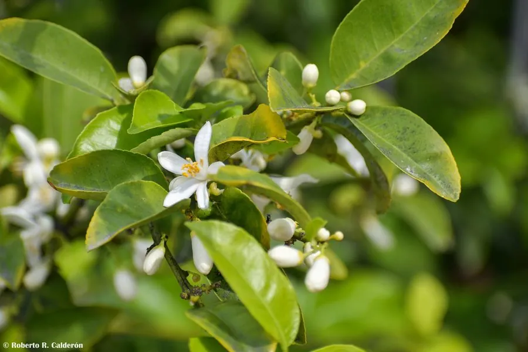

农作物与经济植物 · 植物界
橙 Citrus sinensis

橙是芸香科常绿果树，果实圆润、甜酸适中、汁水丰富，可鲜食或榨汁，是全球栽培最广的柑橘类水果之一。
- 分类
- 门被子植物门纲双子叶植物纲目芸香目科芸香科属柑橘属
- 栖息环境
- 亚热带丘陵与河谷，喜温暖湿润和充足光照
- 地理分布
- 原产中国南方与越南，现广泛栽培于热带、亚热带地区
- 保护级别
- 暂无评估（栽培作物）
物种志
橙是芸香科常绿小乔木，株高 4–8 m，树冠圆头形，枝条有短刺。叶片椭圆形，叶柄有窄翼，叶面深绿有光泽。花白色，芳香，单生或簇生。果实为柑果，圆形或椭圆形，果皮橙黄，油胞细密，果肉橙黄，汁胞柔软多汁，甜酸适口，横切可见果肉分成十余瓣。
橙原产中国南方与越南一带，由宽皮橘与柚杂交而来，15 世纪后传入欧洲，再随殖民贸易扩散到美洲。它喜温暖湿润、光照充足，适宜在排水良好的红壤或沙壤土生长。果实成熟期多在秋冬。甜橙主供鲜食和榨汁，果皮可提取橙油，橙汁是全球最重要的果汁之一。中国江西赣南、湖南、四川等地是主要产区，脐橙、血橙和冰糖橙等都是常见品种。
形态与习性
- 株高4–8 m，常绿小乔木
- 叶椭圆形，叶柄有窄翼
- 果实橙黄柑果，汁多
- 成熟期秋冬
- 用途鲜食、榨汁与橙油
- 主要产区江西赣南、湖南、四川等地
趣味知识
- 橙由宽皮橘与柚杂交而来，是栽培起源的柑橘类。
- 橙汁是全球产量最大的果汁之一。
- 橙皮油胞富含芳香油，可提取橙油用于食品和日化。